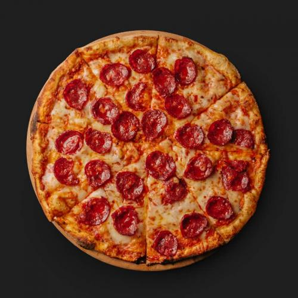

- 

Історія піци починається в Стародавні Греції, коли греки почали випікати великі круглі й плоскі коржі поряд зі звичайним хлібом. Для начинки використовували овочі, фрукти й м'ясо. Згідно етимологічному словнику италійської мови, слово pizza походить від латинського слова pinsere — товкти.
Гавайська піца побачила світ у 1962 році. Враховуючи, що до цього часу страва стала популярною у всьому світі, почали з’являтися різновиди та варіації з різними начинками. Гавайську піцу винайдено Семом Панопулосом, який відкрив піцерію в Канаді.